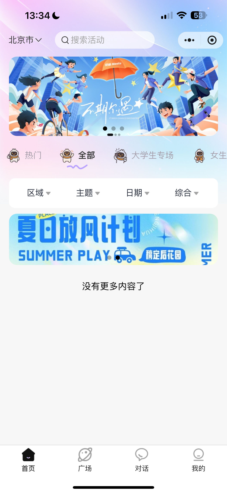
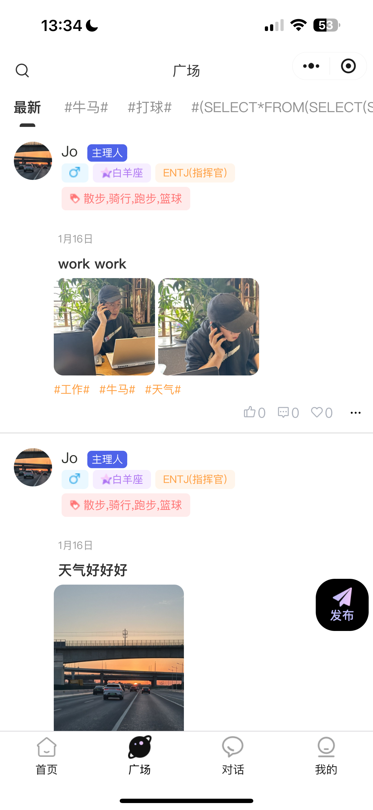

Get the answer,
without getting lost.
这套模板服务的是“我有具体问题，现在就想看懂”。信息要极清楚，但看起来仍然属于年轻产品，而不是后台帮助中心。
一个屏，回答一个问题。
01
入口在哪先告诉用户从哪里开始，而不是先交代一堆背景。
02
要做什么操作步骤必须短，最好每步只配一句解释。
03
结果是什么告诉用户完成后会发生什么，减少流程焦虑。
Screenshot = Proof.
流程页适合用截图卡来证明平台承接能力，不需要再做太多情绪海报式装饰。

